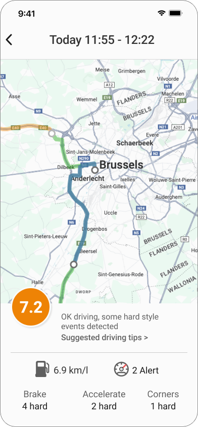
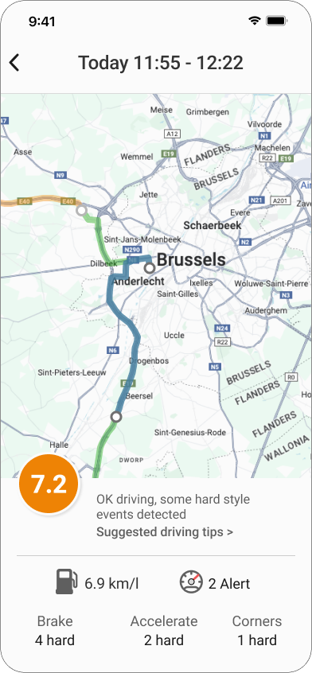

Redesigned fleet dashboard and driver's mobile app
Background
Aioi Nissay Dowa Europe (AND-E) alongside partner Toyota Finance had identified an opportunity for business customers to be offered a lightweight fleet management capability as part of their insurance package. An alternative to purchasing a dedicated fleet management product.
Adapting an existing telematics consumer proposition to monitor driver performance, car maintenance and compliance. A dashboard had been designed by the telematics development team with an existing consumer app adapted for a b2b context.
A pilot with a client had recieved poor user feedback, the ask was for me to come in and 'fix the UI'. I was conscious more understanding was required of target users than just executing an improved UI, making the case to understand more about the user’s situations before design work started.
Research
I conducted initial field studies with a client trialling the tool, a b2b auto parts supplier. I interviewed two fleet managers and conducted a cognitive walkthrough of their main tasks while using the tool. Unfortunately, it wasn’t possible to chat with drivers, so I used anecdotal information from the fleet managers initially and treated these as assumptions to be validated.
I decided there wasn’t a need to measure the current tool’s performance to justify improvements, as the focus was to generate a current understanding of how people do their jobs and identify opportunities to make the system more appropriate.
Personas
Initial sessions with the product team demonstrated that there wasn’t a collective understanding of business goals or user insight. Some concepts were being communicated inconsistently. I therefore created key personas to synthesise findings of the field study into a simple format of headlines for the team to use as guidance.


Design
Fleet manager dashboard
The approach for the initial release was to create a simple UI, establishing a foundation to extend in future releases.
Main changes included:
- Reducing UI flexibility as customisation options easily made the tool hard to use. Creating a screen architecture for primary data groupings that could be easily navigated via multiple entry points
- Apply an F-shaped reading pattern to the screen structure to improve scannability. Creating a series of rows for ‘at a glance’ behaviour exhibited by fleet managers - as they switch between systems and views
- Some data-heavy UI hygiene:
- Comprehension of field labels: re-wording or decomposing into field value suffix
- Standardised visuals & icons to work across dashboard and mobile
- Round up numbers - multiple decimal places not needed by users


Driver's mobile app
The team decided to make the drivers portal a web-based solution as the field study identified drivers using both Android and iPhones with some having older devices to be supported. The working hypothesis for a driver’s main information needs was ‘how I’ve driven today’, how I’ve driven this week’ or ‘have I driven badly’.
 

Testing
Dashboard and mobile designs were tested via remote cognitive walkthroughs with fleet managers, using a mid-fidelity clickable prototype. Key scenarios previously identified guided the session using a semi-structured ‘test’ to gather opinions on assumed user’s comprehension and usability.